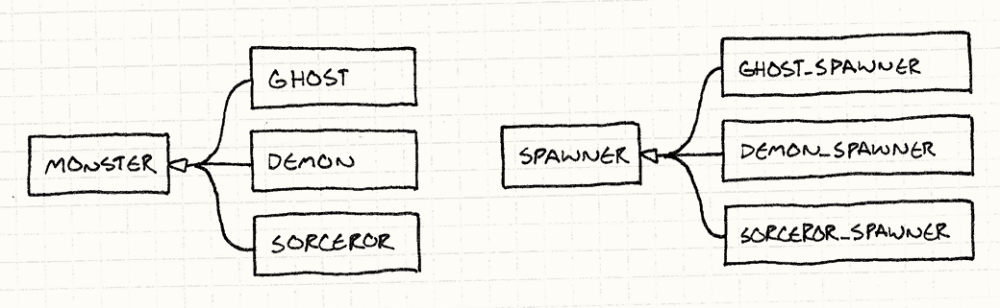
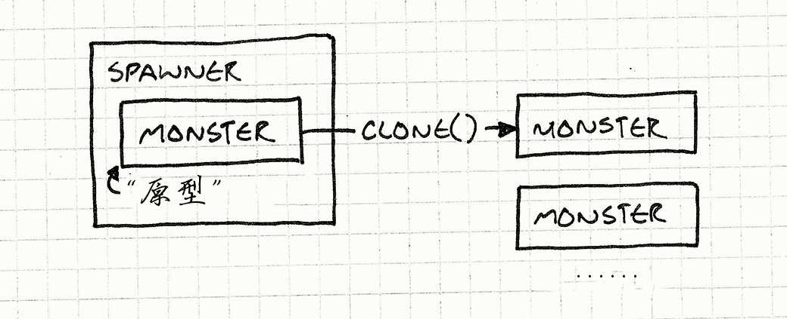

如果给你一个需求
你需要设计出一群不同种类的可怖的怪物,让他们在英雄前进的道路上阻挡他们
你会则表明怎么做呢?
或许当你刚接触游戏开发的时候,你会这样做
1 | class Monster |
每一种怪物都有自己的类.为了让这些家伙降临到这个世界,或许你还会给他们精心设计独属于他们自己的生产者类(spawner).事实上,这是一种相当暴力的解决方案,每个怪物都有自己的生产者类,这构成了一种平行的类的结构.

图上这个带尾巴的小三角形是继承的意思
下面是该方案一种实现
1 |
|
如果你和你的学长/前辈一起共事,那么作为经验丰富的代码世界的造物主,他肯定会想方设法阻止你 "这种代码很难维护.""如果有策划设计了一千种怪物,那么你要专门为这个项目撰写一本字典吗?"显然,以这种方法创世,第七天肯定没法放假.
一个更好的方法
前人给出了一个比上面的实现更具性价比的解决方案 设计模式.
关键思路是
一个对象可以产出与它自己相近的对象。 如果你有一个恶灵，你可以制造更多恶灵。 如果你有一个恶魔，你可以制造其他恶魔。 任何怪物都可以被视为原型怪物，产出其他版本的自己。
为了实现这个功能,我们可以给基类Monster添加一个抽象方法clone.
1 | class Monster |
然后,我们可以让每个怪物都实现这个方法,并且返回一个与它自己的类和状态都完全一样的新对象.
1 | class Ghost : public Monster { |
现在,我们不再需要再给每个怪物都添加上他们自己的生产者类了,我们大可以写一个Spawner类,它可以接受一个Monster对象,并且使用clone方法来产生新的怪物.
1 | class Spawner |
重要的是,或者说他和抽离内部实现的接口思想有很大不同的一点是,他内部是存有template的,模板是怎样的,克隆出来的怪物就是怎样的.

书上举了一个很直观的例子
1 | Monster* ghostPrototype = new Ghost(15, 3); |
这段代码创建了一个恶灵的原型实例,然后创建了这个实例的生产者. 巧妙的是,我们只需要更改这个模板鬼魂的状态,就可以创建出各种各样的鬼魂.
看起来一切都搞定了
吗?
不说每个clone方法仍然需要我们自己去实现,这些工作量不比给每个怪物都写一个生产者类少多少,也不说实际程序开发中会遇到的不同的语义漏洞
做深层拷贝还是浅层拷贝呢？换言之，如果恶魔拿着叉子，克隆恶魔也要克隆叉子吗？
就说这种方法的前提就很难达成,在现代的游戏引擎上工作,还有谁会给每个怪物都设计一个自己的类?
生产函数
哪怕我们必须要为每个怪物都添加上一个独立的类,那么给给每个怪物都添加上一个分离的生产者类也并非上上之选,我们可以使用一个更加简单的方法,那就是使用一个生产函数.
1 | Monster* spawnGhost() |
下面给出新方法的实现,可以看看这和上面的方法有什么区别?
1 | typedef Monster* (*SpawnCallback)(); |
很显然,函数指针嘛,生产者类不需要再存储一个怪物对象了,它只需要储存一个函数指针就可以做到和之前一样的事情了.后面是构筑生产者的代码:
1 | Spawner* ghostSpawner = new Spawner(spawnGhost); |
模板
模板没什么好说的,这是一个C++程序员必须掌握的一个编程方法.在另一些语言中其思想被推广为泛型T
模板和许多高级语言中的继承或者接口不一样,这些机制大多是运行时才确定的(比如成员函数只有在运行时才知道调用哪个),所以被叫做运行时多态,而模板则是一种编译时多态,编译器在编译的时候就知道调用哪个函数了.代价是目标代码会多一点.
那么事情就很清楚了,如果我们把生产者类当作模板中的T(类型参数),我们就能实现这样一段代码
1 | class Spawner |
我们可以这样使用它
1 | Spawner* ghostSpawner = new SpawnerFor<Ghost>(); |
第一公民类型
在C++中，类型不是第一公民,所以我们需要进行一些小改动,不过在此之前,我们需要讨论一下什么是第一公民/第二公民
第一公民类型是指可以被当作参数传递,可以被当作返回值返回,可以被当作容器的元素的类型的类型.比如说,在C++中,函数不是第一公民类型,所以我们不能把函数当作参数传递给另一个函数,也不能把函数当作返回值返回,也不能把函数当作容器的元素的类型.
我们熟悉的 char, int, float等都是第一公民类型,不能满足的上述条件的,就是第二公民了.